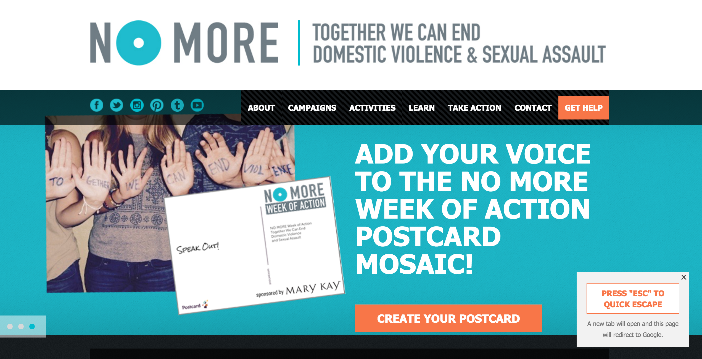
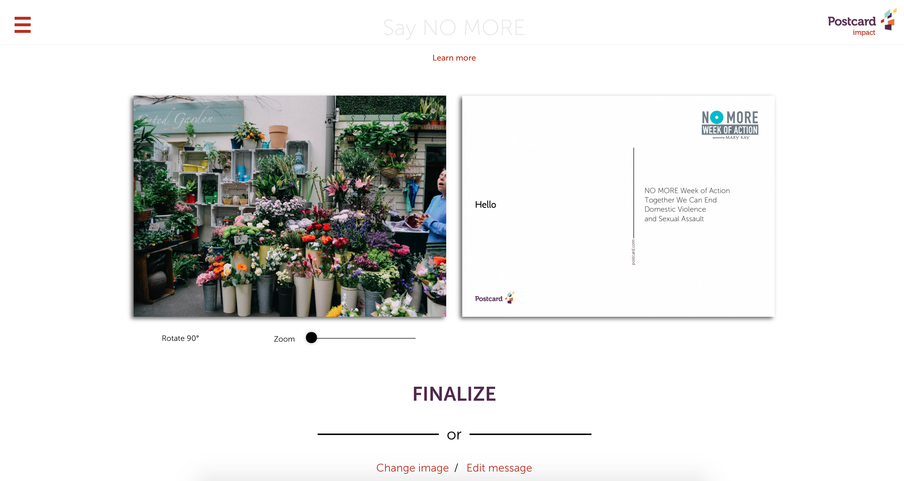
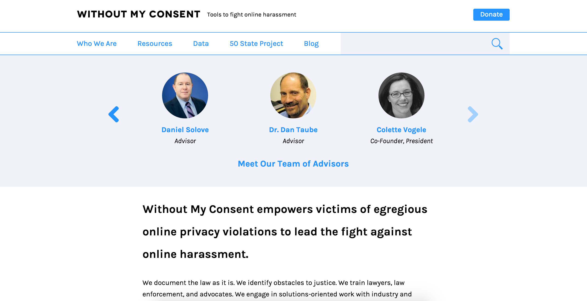

Comparative Analysis
No More is a campaign that aims to “to raise public awareness and engage bystanders around ending domestic violence and sexual assault”. The website itself serves as a resource for people to learn more about the campaign and its activities. Without my Consent is an organization that seeks to combat online invasions of privacy, such as revenge porn. It provides resources to help empower individuals who have been affected and help them manage their situation.
One unique thing about No More’s site is that at the bottom corner of the screen, there is a sign that says “Press ‘Esc’ to Quick Escape”. It offers a quickly offers a solution to exit the site. I believe it is a way to protect victims because oftentimes, victims of domestic violence do not have a lot of freedom and could be put in danger if caught on the site by their partner. Pressing the Esc key quickly opens up a new tab and redirects the site to Google. This sign stays on the screen throughout the various pages of the site.
No More’s site has a lot of resources with various links and videos regarding the campaign. The site is packed with a lot of information and images. Better design could be implemented so that the information is not as overwhelming to the user and the site can be easier to navigate. The images can also look similar to advertisements which is not what they want on their own site. A big part of the navigation bar is for their various social media handles which is important because the campaign really wants to increase awareness.

No More’s site has a lot of unique features for the campaign. As a way to promote their campaign of “No More Week 2016”, they created an interactive postcard. Users can upload their own image and a customizable message to create a digital postcard.

Without my Consent’s site has a much cleaner and minimalist design compared to No More with a nice use of typography and white space. However, the top banner of their site just shows images of their team members instead of resources or information about their goals. They also have a lot of information regarding how to work with a lawyer to help with the situation and various laws to help the victim. But the information is much more organized and straightforward compared to No More. The site is very simple - nothing too fancy - and is easy to navigate and get around.